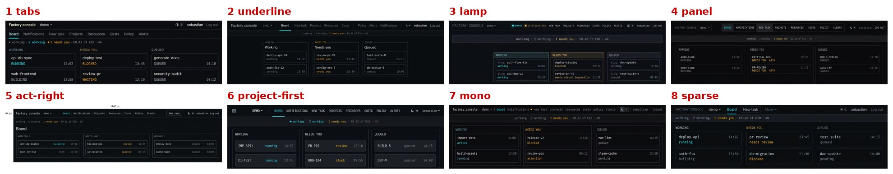
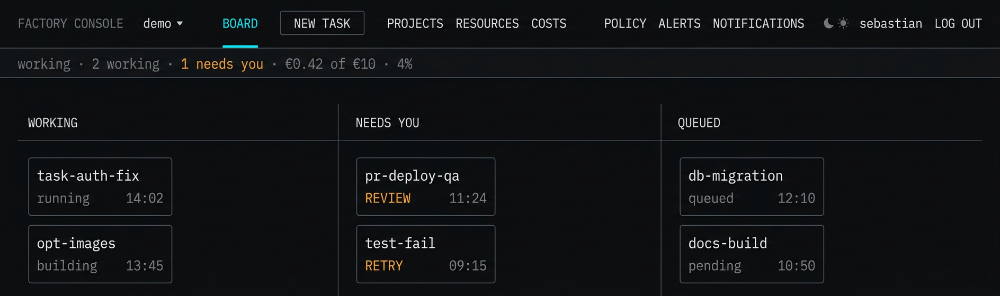
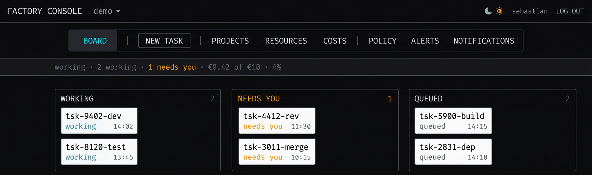
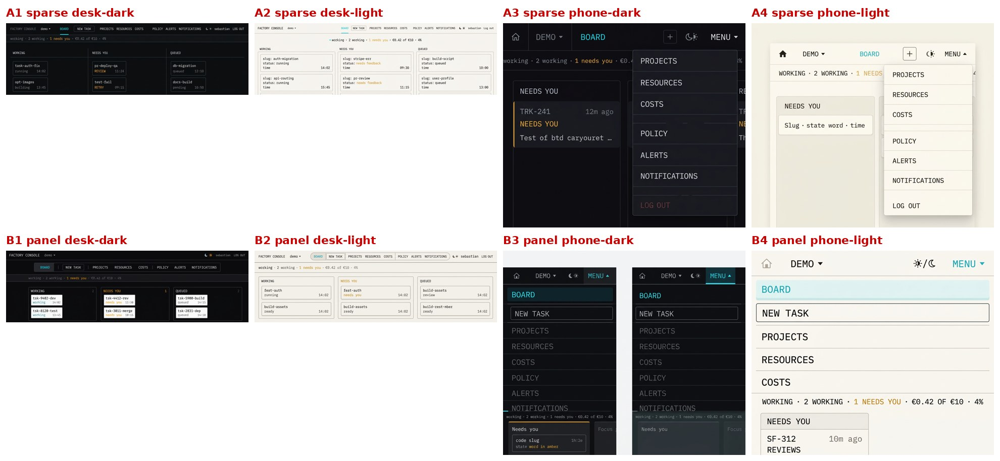
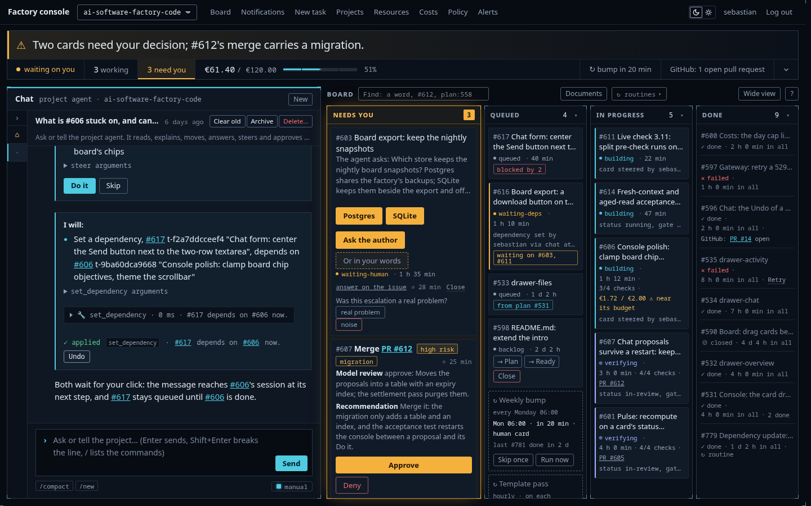
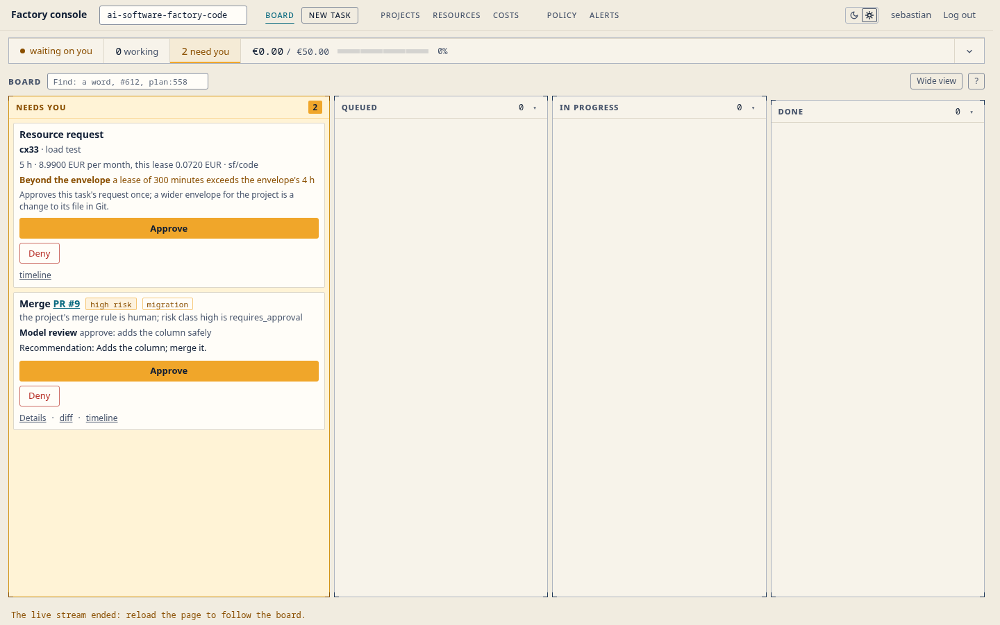

Round 08 — the top bar
The eight directions
| # | name | the idea |
|---|---|---|
| 1 | tabs | folder tabs on the bar's lower hairline |
| 2 | underline | quiet words, the current page underlined |
| 3 | lamp | small state lamps before the destinations |
| 4 | panel | one hairline-framed segmented panel |
| 5 | act-right | destinations left, the action at the right end |
| 6 | project-first | the project leads, destinations follow |
| 7 | mono | lowercase mono for everything |
| 8 | sparse | the fewest visible items, generous space |
Each drawn at 1440 and 390, in both themes, by nano-banana-2.1. Full set in cand/; per-image prompts in the sidecar JSONs there and in prompts/.

Critics
Gemini ran twice (a duplicate dispatch): two samplings, two verdicts — both recorded. GLM ran once.
| run | winner | runner-up |
|---|---|---|
| gemini, run A | 8 sparse | 7 mono |
| gemini, run B | 3 lamp | 5 act-right |
| glm | 8 sparse | 4 panel |
Director's pixel pass and overrules
Checked against the candidate PNGs, not the compressed sheets:
- Sparse hides six of the eight destinations behind "More ⋯" at 1440 (its prompt said so: "two destinations and no more, at every width"). Neither sparse ranking named it; the compressed sheet masked it. Not overruled as a verdict — named as the fix loop's main job: all eight visible at 1440, More only under 1200.
- GLM's "panel fails to elevate New task above the noise": wrong at pixel level. New task sits on a filled lighter block, the only filled segment besides cyan Board. Overruled.
- Gemini A's "mono correctly identifies New task as a primary action": wrong at pixel level. New task is styled like the other five links. Overruled.
- Gemini B's "lamp flawlessly executes on all five criteria": wrong at pixel level. New task is indistinct from the links (criterion 2 fail). Overruled.
- Sparse's phone form put Board inside the Menu sheet, a second press away from the open page. Named as the phone fix: Board's word sits in the bar.
Carried two
8 sparse (two critic wins of three) and 4 panel (GLM runner-up, and the structural contrast: open words against a contained panel). Lamp and mono both fail criterion 2 at pixel level; fixing them means adding what the direction chose not to have.
Fix loop
Eight images, prompts prompts/fix-sparse-*.txt and prompts/fix-panel-*.txt: sparse shows all eight at 1440 in quiet groups and carries Board's word in the phone bar; panel gets dividers only at group boundaries, a bordered New task segment and calmer padding.






Checked against the full PNGs, not the sheet:
- fix-sparse-desk-dark: all eight visible at 1440, no "More ⋯", Board cyan with the short underline, New task the only bordered word, the wider gap before Policy. The prompt took.
- fix-panel-desk-dark: dividers exactly at the two group boundaries (Board | New task | Projects Resources Costs | Policy Alerts Notifications), Board filled with cyan, New task the only outlined word.
- fix-sparse-phone-dark: "Board" cyan in the bar itself, "+" the only bordered item, the sheet's rows 44 px with the gap between reference and governance groups, Log out last.
- fix-panel-phone (both themes): the dark sheet holds all eight rows with Board filled and New task bordered, but dividers sit between every row, not only at group boundaries; the light sheet renders five rows only (governance and Log out absent, cut by the crop). The per-row dividers in both themes are the generator resisting the group-boundary rule — the panel's own divider logic is brittle even in the model's hands.
Compare loop
| critic | A sparse | B panel | winner |
|---|---|---|---|
| gemini | 43/50 | 39/50 | A |
| glm | 41/50 | 37/50 | A |
Both name B's worst fault as rigidity: the fixed panel overflows or truncates when a slug runs long or the window narrows. Gemini names A's worst fault as the phone sheet's structure; overruled at pixel level — the full PNG has 44 px rows and the group gap, the compressed 480 px cell hid them. GLM's A fault (whitespace grouping is implicit, a member learns positions rather than reads groups) stands as recorded.

Recommendation
8 sparse, runner-up 4 panel. Sparse wins both critics and the pixel pass: the quiet open bar matches the mission-control character, Board's word rides the phone bar so the open page is never a second press away, and spacing survives long slugs and narrow windows where a fixed panel must add collapse logic — at which point it becomes sparse with boxes. Both critics would reverse if the destination set grows past eight or the cyan underline proves too subtle in daily use; that is the recorded condition for revisiting panel.
Build (C23)





Cost
Actual gen cost ran ~$0.150 per image, above the $0.10 sidecar estimate, so the round overspent its $5 cap:
| step | est | actual |
|---|---|---|
| 32 candidates | 3.20 | 4.80 |
| critics 1× gemini + 1× glm (contact sheets) | 0.06 | 0.06 |
| gemini duplicate run | 0.03 | 0.03 |
| 8 fix images | 0.80 | 1.20 |
| compare critics ×2 | 0.06 | 0.06 |
| total | 4.15 | ≈ 6.15 |
Over the $5 cap by ≈ $1.15. The sidecar estimate, not the tool's reported actual, was tracked during generation; the discrepancy surfaced only at the final accounting. No further spend after the fix images.